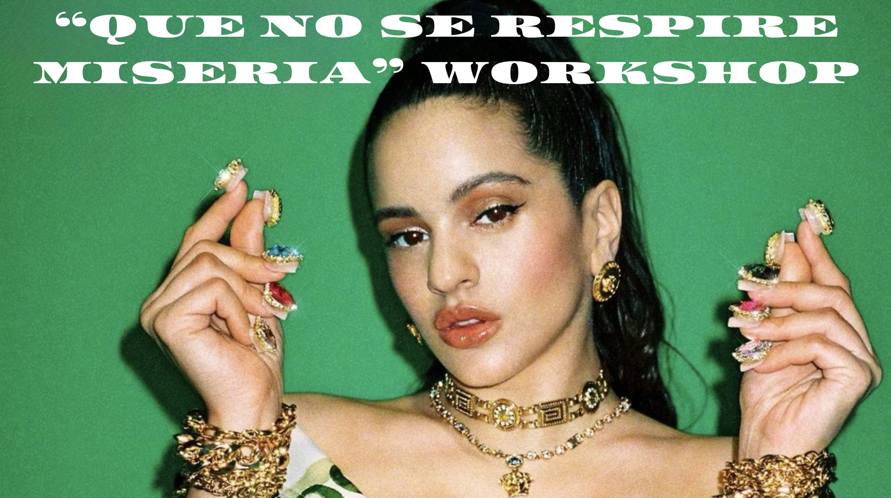

Fucking Money Man CAT

Així vaig batejar la petita xerrada que vaig fer fa uns mesos a unes amigues.
Estaven interessades a començar a invertir i vam acabar parlant d'estalvi i, sobretot, de com organitzar-nos una mica millor.
I el nom del workshop taller? Una frase totalment robada al meu sogre, després de demanar tot allò que ens venia de gust al Nomo de Girona.

Per on vaig començar
Sempre he sigut d'estalviar. De guardar una mica per si de cas. Això de posar els diners a treballar va venir més tard.
El que no m'esperava era que en parléssim tan poc. O potser era jo, que no hi parava prou atenció.
L'any 2017 tenia companys de feina obsessionats amb el Bitcoin. Jo no els escoltava gaire. Ara és fàcil pensar que potser me'n podria haver emportat algun pessic; amb el diari de demà, tothom és molt llest.
I, de fet, ho tenia molt més a prop del que em pensava. Part de les meves tasques com a desenvolupadora de software estaven relacionades amb els plans de pensions i la implementació de MiFID II. Ho tenia davant meu, però no ho veia.
Els diners m'han acompanyat al llarg de la meva vida, com a tothom, però en el meu cas sempre en format d'estalvi.
No va ser fins al 2024, quan em van acomiadar i vaig rebre la indemnització, que vaig decidir que potser ja tocava començar a invertir. Ara animo la gent a informar-se i, si la seva situació ho permet, a començar amb una quantitat petita. Jo, que vaig trigar anys a fer el pas 💣
Sempre li estaré agraïda al meu amic Mikel per aquella xerrada improvisada sobre inversió que ens va fer un dels últims dies a l'oficina. Per mi va ser un abans i un després. Perquè, si hi ha una cosa que ajuda quan comences en aquest món, és veure que algú de confiança ja s'hi ha atrevit abans que tu.
En aquell moment es van ajuntar tres coses:
- L'entrada dels diners de l'ERO (sí, així es diu «ERE» en català).
- Tenir algú proper que invertia i m'ensenyava com ho feia.
- La necessitat de començar a fer alguna cosa amb aquells diners.
Fins aquell moment, estalviar havia estat gairebé un fi en si mateix: anar acumulant i tenir un coixí. Però ara passaria a cobrar l'atur durant qui sap quant de temps. No em feia gaire gràcia gastar els estalvis que m'havia costat tants anys aconseguir, i vaig començar a preguntar-me què volia fer amb aquells diners.
No volia simplement anar gastant els estalvis fins que s'acabessin. Volia que una part continués fent la seva funció de coixí, però també que una altra part pogués créixer amb el temps.
I així és com vaig començar a explorar una mica de tot: fons indexats, accions individuals, crowdfunding, crowdlending, comptes remunerats, plans de pensions…
Les tres caixes
Una de les coses de què vam parlar a la xerrada va ser com organitzar els estalvis en tres caixes: emergències, somnis i futur.
- Emergències: un coixí davant dels imprevistos.
- Somnis: aquelles coses que volem fer més endavant (un viatge, una reforma, canviar de cotxe o simplement donar-nos algun caprici).
- Futur: els diners que sabem que no necessitarem durant molts anys i que, per tant, podem posar a treballar.
Quan vaig començar a entendre aquesta diferència, em va resultar molt més fàcil decidir què fer amb els meus diners.
I, evidentment, no tothom ha de repartir els diners entre les tres caixes de la mateixa manera. Cadascú pot donar més o menys pes a cada caixa segons el moment en què es trobi.
El fons d'emergència
També vam parlar del fons d'emergència: uns diners que tens disponibles per si en algun moment les coses es compliquen. Sovint es recomana tenir l'equivalent a les despeses bàsiques de 3 a 6 mesos (lloguer, subministraments, menjar…). No cal seguir aquesta regla al peu de la lletra, però tenir aquest coixí et dona marge i, sobretot, evita haver de vendre inversions just quan no toca.
Per mi, tenir aquests diners separats és el que em dona tranquil·litat per invertir la resta.
Separar els diners just quan cobres
Si hi ha una idea de la xerrada que em sembla especialment important, és aquesta:
“Estalviar no és el que et sobra a final de mes, és el que separes just quan cobres.” *
* Us juro que no torno a autocitar-me.

Per mi, aquesta és probablement la diferència entre estalviar de tant en tant i convertir l'estalvi en una cosa que forma part del teu dia a dia.
No cal començar amb grans quantitats. És molt millor començar amb una quantitat que sàpigues que pots mantenir cada mes i anar construint des d'aquí.
La rutina mensual
Un cop vaig tenir més clar com organitzar els diners, vaig començar a registrar en un full de càlcul quant tenia a cada plataforma, per tenir sempre una visió clara del meu patrimoni total.
Cada principi de mes, la primera cosa que faig és revisar-ho tot: quant tinc, on ho tinc i com ha evolucionat respecte al mes anterior. Amb el temps, vam fer el mateix amb el patrimoni de la meva parella i, ara, ho revisem juntes cada mes.
Veure a TikTok: What is budget? 🥹 — @jakeandmax_ ↗
El que va començar com un simple full de càlcul ha anat evolucionant: primer Looker Studio per visualitzar les dades i ara una app feta per Claude. Però l'eina és el de menys. El que importa és haver-ho convertit en una rutina que compartim.